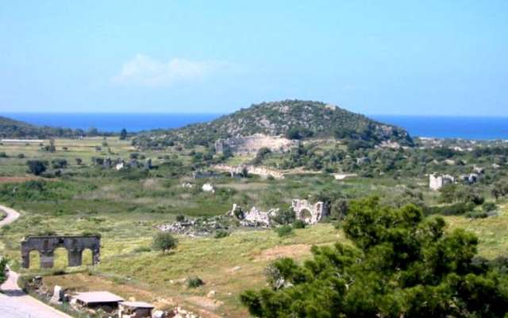
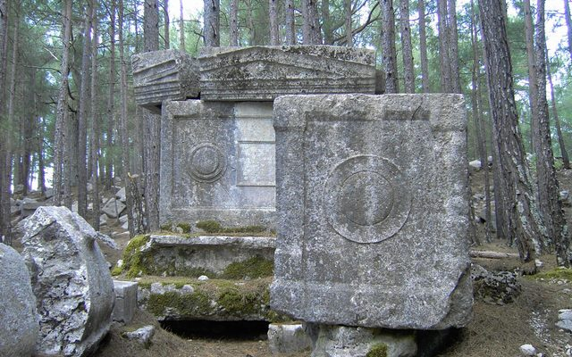
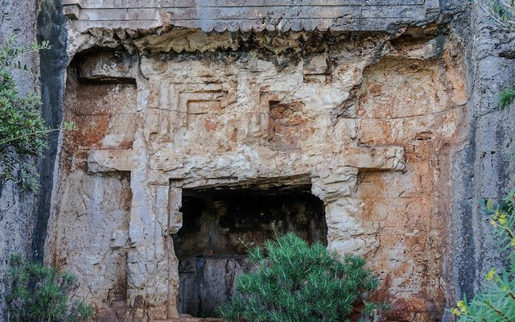
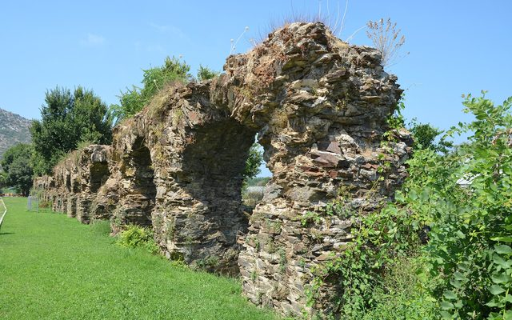

Kültür Varlıkları गाइड में अंताल्या की 75 जगहें हैं: 48 पुरातात्विक स्थल, 11 संग्रहालय, 6 क़िला और ऐतिहासिक इमारत, 3 जलप्रपात, 3 घाटी (कैन्यन), 2 प्राकृतिक स्थल, 1 धार्मिक इमारत, 1 ट्रेकिंग मार्ग। नीचे मुख्य आकर्षण, नक्शा और पूरी सूची है।
⭐ मुख्य आकर्षण

ज़ैंथोस लिकिया का सबसे महत्वपूर्ण नगर और लंबे समय तक उसका प्रशासनिक केंद्र था। एशेन घाटी के ऊपर ढलान पर बसा यह नगर अपने स्वतंत्रता-प्रेमी लोगों के लिए याद किया जाता है:…

अंताल्या संग्रहालय तुर्किये के सबसे व्यापक पुरातात्विक संग्रहालयों में से एक है, जिसमें पैम्फ़िलिया, लिकिया और पिसिडिया के ख़ज़ाने एक साथ हैं। यात्रा कराइन गुफा की…

क्योप्र्युचाय (प्राचीन यूरीमेडोन) नदी के किनारे बसे आस्पेंडोस में प्राचीन दुनिया के सबसे अच्छी तरह संरक्षित रंगमंचों में से एक है। ईसवी दूसरी सदी में मार्कस ऑरेलियस के…
🗺 नक्शे पर
📍 सभी जगहें (75)
पुरातात्विक स्थल (48)
ज़ैंथोस पुरातात्विक स्थलपुरातात्विक स्थल · UNESCOआस्पेंडोसपुरातात्विक स्थल
पातारा पुरातात्विक स्थलपुरातात्विक स्थल पेर्गे पुरातात्विक स्थलपुरातात्विक स्थल
पेर्गे पुरातात्विक स्थलपुरातात्विक स्थल साइड पुरातात्विक स्थलपुरातात्विक स्थल
साइड पुरातात्विक स्थलपुरातात्विक स्थल स्येद्रा प्राचीन नगरपुरातात्विक स्थल
स्येद्रा प्राचीन नगरपुरातात्विक स्थल क्रागुस का अंतिओखियापुरातात्विक स्थल
क्रागुस का अंतिओखियापुरातात्विक स्थल एंटीफ़ेलोसपुरातात्विक स्थल
एंटीफ़ेलोसपुरातात्विक स्थल अपेर्लाई प्राचीन नगरपुरातात्विक स्थल
अपेर्लाई प्राचीन नगरपुरातात्विक स्थल अपोलोनिया (लीकिया) प्राचीन नगरपुरातात्विक स्थल
अपोलोनिया (लीकिया) प्राचीन नगरपुरातात्विक स्थल आरियास्सोस प्राचीन नगरपुरातात्विक स्थल
आरियास्सोस प्राचीन नगरपुरातात्विक स्थल आरीकांडा पुरातात्विक स्थलपुरातात्विक स्थल
आरीकांडा पुरातात्विक स्थलपुरातात्विक स्थल
इदेबेस्सोसपुरातात्विक स्थल इओतापे प्राचीन नगरपुरातात्विक स्थल
इओतापे प्राचीन नगरपुरातात्विक स्थल केकोवा डूबा नगरपुरातात्विक स्थल
केकोवा डूबा नगरपुरातात्विक स्थल कितानाउरापुरातात्विक स्थल
कितानाउरापुरातात्विक स्थल कियानेआई प्राचीन नगरपुरातात्विक स्थल
कियानेआई प्राचीन नगरपुरातात्विक स्थल लिकियाई सभ्यता संग्रहालय और अंद्रियाके पुरातात्विक स्थलपुरातात्विक स्थल
लिकियाई सभ्यता संग्रहालय और अंद्रियाके पुरातात्विक स्थलपुरातात्विक स्थल लिमिरा पुरातात्विक स्थलपुरातात्विक स्थल
लिमिरा पुरातात्विक स्थलपुरातात्विक स्थल मायरा पुरातात्विक स्थलपुरातात्विक स्थल
मायरा पुरातात्विक स्थलपुरातात्विक स्थल ओलिंपोस पुरातात्विक स्थलपुरातात्विक स्थल
ओलिंपोस पुरातात्विक स्थलपुरातात्विक स्थल फ़ासेलिस पुरातात्विक स्थलपुरातात्विक स्थल
फ़ासेलिस पुरातात्विक स्थलपुरातात्विक स्थल फ़ेल्लोस प्राचीन नगरपुरातात्विक स्थल
फ़ेल्लोस प्राचीन नगरपुरातात्विक स्थल रोदियापोलिस प्राचीन नगरपुरातात्विक स्थल
रोदियापोलिस प्राचीन नगरपुरातात्विक स्थल
सेबेदापुरातात्विक स्थल सेल्यूकिया (पैम्फ़ीलिया) प्राचीन नगरपुरातात्विक स्थल
सेल्यूकिया (पैम्फ़ीलिया) प्राचीन नगरपुरातात्विक स्थल सेल्गे प्राचीन नगरपुरातात्विक स्थल
सेल्गे प्राचीन नगरपुरातात्विक स्थल
सेलिनुस प्राचीन नगरपुरातात्विक स्थल सिल्लियोन प्राचीन नगरपुरातात्विक स्थल
सिल्लियोन प्राचीन नगरपुरातात्विक स्थल सिमेना पुरातात्विक स्थलपुरातात्विक स्थल
सिमेना पुरातात्विक स्थलपुरातात्विक स्थल सूरा प्राचीन नगरपुरातात्विक स्थल
सूरा प्राचीन नगरपुरातात्विक स्थल तेइमियुस्सा प्राचीन नगरपुरातात्विक स्थल
तेइमियुस्सा प्राचीन नगरपुरातात्विक स्थल तेर्मेसोस पुरातात्विक स्थलपुरातात्विक स्थल
तेर्मेसोस पुरातात्विक स्थलपुरातात्विक स्थल त्रेबेन्नापुरातात्विक स्थल
त्रेबेन्नापुरातात्विक स्थल त्रिसापुरातात्विक स्थल
त्रिसापुरातात्विक स्थल तिबेरिस्सोसपुरातात्विक स्थल
तिबेरिस्सोसपुरातात्विक स्थल ओकुज़िनी गुफापुरातात्विक स्थलअकालिस्सोसपुरातात्विक स्थलआर्नेआईपुरातात्विक स्थलबेलदिबी गुफापुरातात्विक स्थलएतेन्नापुरातात्विक स्थलगागाईपुरातात्विक स्थलइसिंडापुरातात्विक स्थलकांदिबापुरातात्विक स्थलकोरीडाल्लापुरातात्विक स्थललामोसपुरातात्विक स्थलपेदनेलिस्सोसपुरातात्विक स्थलइदिरोसपुरातात्विक स्थल
ओकुज़िनी गुफापुरातात्विक स्थलअकालिस्सोसपुरातात्विक स्थलआर्नेआईपुरातात्विक स्थलबेलदिबी गुफापुरातात्विक स्थलएतेन्नापुरातात्विक स्थलगागाईपुरातात्विक स्थलइसिंडापुरातात्विक स्थलकांदिबापुरातात्विक स्थलकोरीडाल्लापुरातात्विक स्थललामोसपुरातात्विक स्थलपेदनेलिस्सोसपुरातात्विक स्थलइदिरोसपुरातात्विक स्थलसंग्रहालय (11)
अंताल्या संग्रहालयसंग्रहालय अलान्या संग्रहालयसंग्रहालय
अलान्या संग्रहालयसंग्रहालय अंताल्या अतातुर्क गृह संग्रहालयसंग्रहालय
अंताल्या अतातुर्क गृह संग्रहालयसंग्रहालय अंताल्या नृवंशविज्ञान संग्रहालयसंग्रहालय
अंताल्या नृवंशविज्ञान संग्रहालयसंग्रहालय अंताल्या खिलौना संग्रहालयसंग्रहालय
अंताल्या खिलौना संग्रहालयसंग्रहालय संत निकोलस स्मारक संग्रहालयसंग्रहालय
संत निकोलस स्मारक संग्रहालयसंग्रहालय साइड संग्रहालयसंग्रहालयअलान्या अतातुर्क गृह संग्रहालयसंग्रहालयअंताल्या नेक्रोपोलिस संग्रहालयसंग्रहालयएलमाली संग्रहालयसंग्रहालयमेवलेवीख़ाना संग्रहालयसंग्रहालय
साइड संग्रहालयसंग्रहालयअलान्या अतातुर्क गृह संग्रहालयसंग्रहालयअंताल्या नेक्रोपोलिस संग्रहालयसंग्रहालयएलमाली संग्रहालयसंग्रहालयमेवलेवीख़ाना संग्रहालयसंग्रहालयक़िला और ऐतिहासिक इमारत (6)
 अलान्या क़िलाक़िला और ऐतिहासिक इमारत
अलान्या क़िलाक़िला और ऐतिहासिक इमारत अलाराहानक़िला और ऐतिहासिक इमारत
अलाराहानक़िला और ऐतिहासिक इमारत हेड्रियन द्वार (उचकापिलार)क़िला और ऐतिहासिक इमारत
हेड्रियन द्वार (उचकापिलार)क़िला और ऐतिहासिक इमारत क्योप्रुपाज़ार पुल (आस्पेंदोस)क़िला और ऐतिहासिक इमारत
क्योप्रुपाज़ार पुल (आस्पेंदोस)क़िला और ऐतिहासिक इमारत क़िज़िलकुले (लाल मीनार)क़िला और ऐतिहासिक इमारत
क़िज़िलकुले (लाल मीनार)क़िला और ऐतिहासिक इमारत शरापसा हानक़िला और ऐतिहासिक इमारत
शरापसा हानक़िला और ऐतिहासिक इमारत